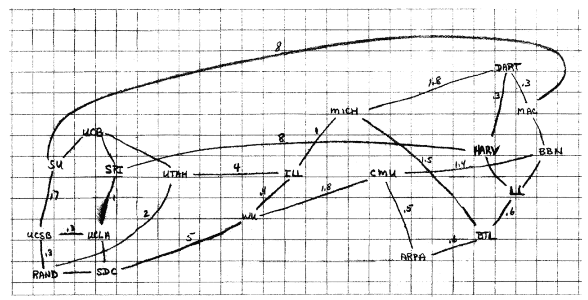

Hogyan működik a web?
A 21. századi gazdaság és társadalom működése elképzelhetetlen az Internet és a rajta futó szolgáltatások, különösen a World Wide Web nélkül. Egy gazdaságinformatikus számára, aki a technológia és az üzleti folyamatok metszéspontjában tevékenykedik, ezen ökoszisztéma mélyreható ismerete nem csupán előny, hanem alapvető követelmény. Ez a fejezet arra vállalkozik, hogy egy tömör összefoglaló képet fessen az Internetről és a World Wide Web-ről, bemutatva azok technológiai alapjait.
1.1. Az Internet és a World Wide Web
Az Internet egy globális, összekapcsolt számítógép-hálózatokból álló rendszer, a fizikai és logikai infrastruktúra, amely lehetővé teszi az adatok cseréjét a világ különböző pontjai között. Ez a "hálózatok hálózata", amely kábelek, rádióhullámok és műholdak segítségével köti össze az eszközöket. Ezzel szemben a World Wide Web (WWW vagy Web) egy információs rendszer, amely az Interneten működik. Ez egy globális gyűjteménye a hiperhivatkozásokkal összekötött dokumentumoknak és egyéb erőforrásoknak, amelyeket webböngészők segítségével érhetünk el. Míg az Internet maga az infrastruktúra, a Web csupán egy – bár kétségtelenül a legnépszerűbb – szolgáltatás, amely ezen az infrastruktúrán fut, az e-mail, az online játékok vagy a fájlátvitel (FTP) mellett. Ez a megkülönböztetés alapvető, hiszen más üzleti modellek és technológiai megoldások épülnek a puszta hálózati kapcsolatra (Internet), és mások a webes tartalommegosztásra (WWW).
1.2. Az Internet fejlődésének mérföldkövei
Az Internet története a hidegháborús fegyverkezési verseny idejére nyúlik vissza. Az 1960-as években az Egyesült Államok Védelmi Minisztériuma egy olyan kommunikációs rendszert akart létrehozni, amely egy esetleges atomcsapás után is működőképes marad. A kulcs a decentralizáció volt: egy olyan hálózat, amelynek nincs egyetlen központi, sebezhető pontja.

Kulcsfontosságú mérföldkövek:
- 1969 – ARPANET: Az Advanced Research Projects Agency (ARPA) elindítja az ARPANET-et, amely kezdetben négy amerikai kutatási központot: a Kaliforniai Egyetemet Los Angelesben (UCLA), a Stanford Kutatóintézetet (SRI), a Kaliforniai Egyetemet Santa Barbarán (UCSB) és a Utahi Egyetemet kötött össze. A rendszer forradalmi újítása a csomagkapcsolt adatátvitel volt. A korábbi vonalkapcsolt (mint a hagyományos telefon) hálózatokkal ellentétben itt az adatokat kisebb csomagokra bontották, amelyeket egyenként címeztek meg és küldtek el a hálózaton. Ezek a csomagok akár különböző útvonalakon is haladhattak, és a célállomáson álltak újra össze. Ez a rugalmasság biztosította a hálózat túlélőképességét.
- 1983 – A TCP/IP megszületése: Az ARPANET hivatalosan is átáll a TCP/IP protokollkészletre, amely egységesítette a különböző hálózatok közötti kommunikációt. 1983. január 1-jét tekintjük a modern Internet születésnapjának, mivel ez tette lehetővé a "hálózatok hálózatának" (Inter-net) létrejöttét. (A protokoll definíciója lentebb.)
- 1989-1991 – A World Wide Web Forradalma: A svájci CERN részecskefizikai kutatóközpontban dolgozó brit tudós, Tim Berners-Lee egy olyan rendszert javasolt, amely megkönnyíti a kutatók számára az információk megosztását. A Web alapjait három kulcsfontosságú technológia és egy szoftvercsomag megalkotásával fektette le:
- HTML (HyperText Markup Language): Egy egyszerű leírónyelv a dokumentumok létrehozására.
- URL (Uniform Resource Locator): Egy egységes címzési rendszer a webes tartalmak azonosítására.
- HTTP (Hypertext Transfer Protocol): Egy protokoll a webes tartalmak lekérésére és továbbítására.
- Az első böngésző és webszerver szoftver.
Berners-Lee víziója egy nyílt, bárki által használható és bővíthető információs teret hozott létre. A felhasználóbarát, grafikus böngészők megjelenésével a Web kilépett az akadémiai körökből, és a '90-es évek közepétől megkezdte világhódító útját, amely alapjaiban formálta át a kommunikációt, a kereskedelmet és a társadalmat.
1.3. A kommunikáció nyelve: protokollok
A protokoll egy szabály- és szabványgyűjtemény, amely leírja a hálózati kommunikáció résztvevőinek viselkedését. Olyan, mint egy diplomáciai protokoll vagy egy nyelvtani szabályrendszer: biztosítja, hogy a felek megértsék egymást és az interakció rendezett keretek között folyjon.
- A TCP/IP Protokollcsalád: Ez az internetes kommunikáció alapja. Képzeljük el, hogy egy vastag könyvet akarunk elküldeni postán. Nem tesszük be egy óriási borítékba, hanem szétszedjük lapokra.
- TCP (Transmission Control Protocol): A "gondos postai ügyintéző". Fogja a könyvet (az adatot), lapokra (csomagokra) szedi, megszámozza minden lapot, majd külön borítékba teszi őket. A címzettnél ellenőrzi, hogy minden lap megérkezett-e, és a sorszámok alapján újra összerakja a könyvet. Ha egy lap elvész, kéri annak újraküldését. Ez biztosítja a megbízható, sorrendhelyes adatátvitelt.
- IP (Internet Protocol): A "postás". Minden borítékra (csomagra) ráírja a feladó és a címzett címét (IP-cím). Az IP protokoll feladata, hogy a csomagokat eljuttassa a célállomásra a hálózat útvesztőin keresztül, de nem garantálja sem a sorrendet, sem a sikeres kézbesítést. 1
A két protokoll együttműködése (TCP/IP) biztosítja, hogy az adatok megbízhatóan és a helyes sorrendben érkezzenek meg a célba.
1.4. A kliens-szerver modell
Ahhoz, hogy megértsük, hogyan működik a Web (és számos más internetes szolgáltatás), ismernünk kell a kliens-szerver modellt. Ez a modell két fő szereplőre épül, amelyek meghatározott feladatokat látnak el.
A kliens (client): Az "ügyfél" vagy kérelmező. Ez egy szoftver vagy eszköz (például a számítógépünkön futó webböngésző, egy mobilalkalmazás vagy egy e-mail program), amely egy szolgáltatást vagy adatot szeretne elérni. A kliens feladata, hogy elindítsa a kommunikációt egy kérés (request) elküldésével.
A szerver (server): A "kiszolgáló". Ez egy nagy teljesítményű, folyamatosan elérhető számítógép, amely arra vár, hogy a kliensektől kérések érkezzenek. Amikor egy kérés beérkezik, a szerver feldolgozza azt (pl. megkeres egy fájlt, lekérdez egy adatbázist), majd egy válasszal (response) felel a kliensnek. Egyetlen szerver egyszerre több ezer klienst is kiszolgálhat.
Ez a modell számos előnnyel jár:
- Központosított menedzsment: Az adatok és az alkalmazáslogika a szerveren található, ami megkönnyíti a karbantartást, a frissítéseket és a biztonsági mentéseket.
- Skálázhatóság: A szerver erőforrásai (hardver, sávszélesség) bővíthetők a növekvő kliensigények kiszolgálására anélkül, hogy a kliens oldalon változtatásra lenne szükség.
- Erőforrás-megosztás: Egy szerver egyszerre több ezer vagy millió klienst is kiszolgálhat.
1.5. A kapu a webre: a böngésző
A böngésző egy olyan kliensalkalmazás, amelynek célja a World Wide Weben található információk elérése és megjelenítése a felhasználó számára. Fő feladatai a következők:
- Kérések indítása: Amikor a felhasználó beír egy webcímet (URL-t) vagy rákattint egy linkre, a böngésző egy HTTP kérést állít össze és küld el a megfelelő szervernek.
- Válaszok fogadása: Fogadja a szerver által küldött választ, amely leggyakrabban HTML, CSS és JavaScript kódból, valamint képekből és egyéb erőforrásokból áll.
- Renderelés: Ez a böngésző legfontosabb "mágiája". A kapott forráskódokat (amelyek önmagukban csak szöveges fájlok) értelmezi, és egy vizuálisan egységes, interaktív, olvasható weboldallá alakítja ("rendereli") a felhasználó képernyőjén.
- Interakció kezelése: Kezeli a felhasználói műveleteket, például a gombokra kattintást, az űrlapok kitöltését és az újabb kérések elindítását.
A legismertebb böngészők a Google Chrome, a Mozilla Firefox, a Microsoft Edge és az Apple Safari. Bár a működési elvük azonos, renderelő motorjaikban és funkcióikban eltérhetnek.
Érdekes statisztikák: w3schools.com, gemiusRanking
1.6. Egy weboldal betöltődésének folyamata
Egyetlen Enter leütése a böngészőben egy mindennapos mozdulat, amely mögött azonban egy villámgyors és megfelelően koreografált digitális eseménysorozat rejlik. Nézzük meg lépésről lépésre, mi történik a kulisszák mögött!
sequenceDiagram
participant B as Böngésző/Felhasználó
participant D as DNS Szerver
participant W as Webszerver
B->>D: IP cím kérése (www.cím.hu)
D-->>B: IP cím válasz
B->>W: 1. Kapcsolatfelvétel (TCP Handshake)
B->>W: 2. HTTP(S) Kérés (pl. a főoldalért)
Note right of W: Kérés feldolgozása, <br>HTML kód generálása...
W-->>B: 3. HTTP(S) Válasz (HTML kód)
Note left of B: HTML renderelése, <br>további elemek (CSS, JS) <br> felfedezése...
loop További erőforrások letöltése
B->>W: Újabb HTTP(S) Kérések (CSS, JS, képek)
W-->>B: Válaszok
end
Note left of B: Kész, interaktív oldal megjelenítése
- Névfeloldás (DNS): A felhasználó beírja: www.uni-corvinus.hu. A számítógépek nem neveket, hanem számokból álló IP-címeket használnak (pl. 146.110.3.100). A böngésző első dolga, hogy "lefordítsa" a domain nevet IP-címre. Ezt a feladatot a DNS (Domain Name System), az internet globális telefonkönyve végzi el. A böngésző megkérdezi a legközelebbi DNS-szervert, amely vagy tudja a választ, vagy továbbkérdez más szerverektől, amíg meg nem találja a helyes IP-címet.
- Kapcsolatfelvétel (TCP Handshake): A böngésző a megszerzett IP-cím segítségével egy háromlépéses TCP "kézfogást" (handshake) kezdeményez a Corvinus Egyetem webszerverével, hogy egy stabil kommunikációs csatornát építsen ki.
- A Kérés (HTTP/HTTPS Request): A csatorna felépülése után a böngésző (a kliens) egy HTTP kérést küld a szervernek. Ez egy egyszerű szöveges üzenet, amely tartalmazza a kérés legfontosabb adatait.
- GET / HTTP/1.1: A kérés sora, amely tartalmazza a metódust (GET - adatot kérek), az elérési utat (/ - a weboldal gyökere, azaz a főoldal), és a protokoll verzióját.
- Host: www.uni-corvinus.hu: A célhoszt, vagyis melyik weboldalt keressük ezen az IP-címen (egy szerver több weboldalt is kiszolgálhat).
- Egyéb fejlécek: Információk a böngészőről, az elfogadott formátumokról stb.
- Szerver oldali feldolgozás: A szerver fogadja és értelmezi a kérést. Megkeresi a kért erőforrást (pl. a főoldal HTML fájlját), vagy ha az oldal dinamikus, lefuttat egy programot, amely legenerálja a HTML kódot.
- A Válasz (HTTP/HTTPS Response): A szerver egy HTTP válasszal felel, amely szintén szöveges.
- HTTP/1.1 200 OK: Az állapot sor, amely jelzi a protokoll verzióját és a kérés sikerességét (200 OK). Más kódok hibát jelezhetnek (pl. 404 Not Found - a kért erőforrás nem található).
- Fejlécek: Információk a válaszról, pl. a tartalom típusa (Content-Type: text/html), a szerver típusa, a dátum.
- A Törzs (Body): A válasz "rakománya", ebben az esetben maga a weboldal HTML kódja.
- Renderelés: A böngésző megkapja a HTML kódot, és elkezdi felépíteni az oldal vázát. A HTML elemzése közben újabb hivatkozásokat találhat (pl. CSS stíluslapokra, JavaScript fájlokra, képekre). Mindegyikre újabb HTTP kérést indít, letölti őket, majd a HTML, CSS és JavaScript alapján felrajzolja (rendereli) a kész, interaktív weboldalt a képernyőre.
Note
A HTTPS és a digitális bizalom
A HTTPS (Hypertext Transfer Protocol Secure) ugyanazt a folyamatot hajtja végre, de egy titkosítási réteget (SSL/TLS) ad hozzá. A TCP kézfogás után a böngésző és a szerver egy bonyolult kriptográfiai eljárással megegyezik egy titkos kulcsban. Innentől kezdve minden közöttük zajló kommunikáció ezzel a kulccsal van titkosítva. Ez biztosítja, hogy:
- Titkosítás: Külső fél nem tudja elolvasni az adatokat (pl. egy bankkártyaadatot).
- Integritás: Az adatokat útközben nem lehet észrevétlenül módosítani.
- Hitelesítés: A böngésző a szerver tanúsítványa alapján meggyőződhet róla, hogy valóban azzal a szerverrel kommunikál, akinek az kiadja magát.
1.7 Ellenőrző kérdések
- Fogalmazza meg saját szavaival a legfontosabb különbséget az Internet és a World Wide Web között! Mondjon példát két olyan internetes szolgáltatásra, amely nem része a Webnek!
- Mi volt a csomagkapcsolt adatátvitel legfőbb előnye a vonalkapcsolttal szemben a kezdeti ARPANET kontextusában?
- Milyen három alapvető technológiát köszönhetünk Tim Berners-Lee-nek, amelyek a Web alapjait képezik?
- Magyarázza el a TCP és az IP protokollok közötti munkamegosztást egy Ön által választott analógiával!
- Mi a DNS rendszer szerepe egy weboldal betöltődése során? Miért van rá szükség?
- Milyen plusz biztonsági garanciákat nyújt a HTTPS a sima HTTP-hez képest? Miért elengedhetetlen ez egy webáruház esetében?
🌐
- IPv4 vs. IPv6: Az eredeti, 1983-ban bevezetett IPv4 protokoll körülbelül 4.3 milliárd egyedi címet tesz lehetővé. Ez a szám onnan ered, hogy az IPv4-címek 32 bites számsorok. A számítástechnikában egy bitnek két lehetséges értéke lehet (0 vagy 1). Így a lehetséges kombinációk száma 2 a 32. hatványon. Ez a szám a 2010-es évekre kimerült az internetre csatlakozó eszközök robbanásszerű növekedése miatt. A megoldást az IPv6 jelenti, amely egy sokkal nagyobb címtartományt biztosít (2^128), ezzel hosszú távon garantálva az Internet bővülését. ↩
Forrás: https://resilientwebdesign.com/
A szöveg AI felhasználásával készült.